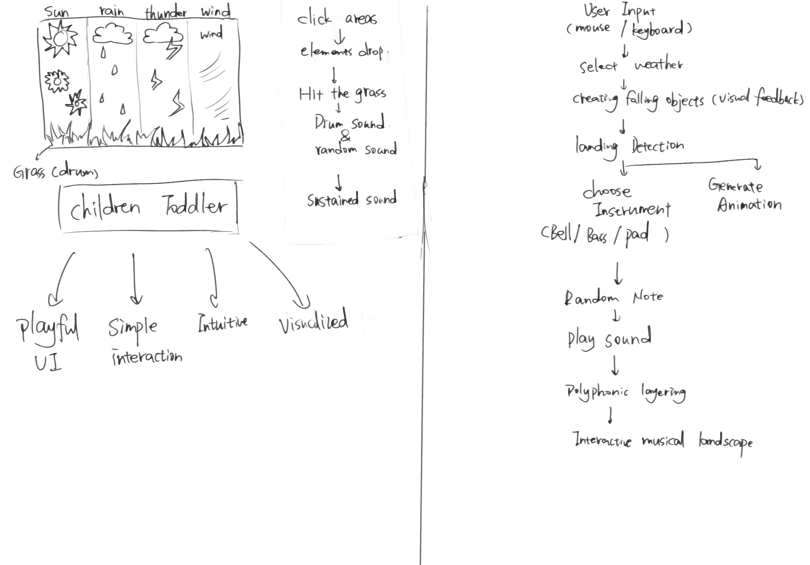

Scenario: Musical Toy for Toddlers
Toddlers have limited language skills, so the website should provide an immersive, visually guided experience that is easy to understand without relying on text. Bright colors, playful and recognizable icons, and engaging visual effects will be used to capture children's attention and maintain their interest. Exploration is a key part of the experience. As toddlers have little prior experience using websites, they learn through intuitive exploration rather than relying on existing knowledge. Therefore, interactions should be simple, intuitive and easy to discover.
Playfulness is the most important part of a digital toy. A child-friendly layout, colorful visuals, dynamic animations and interesting sound effects can attract children to interact with the website.
Response
The website is divided into five sections. Four horizontal sections represent different weather elements, each with its own icon and instrument timbre. Pitches are randomly generated within a harmonious scale, ensuring there are no "wrong" notes and encouraging open-ended exploration. The bottom section functions as percussion(drum).
When users click a section or press its corresponding keyboard key, small weather icons fall onto the grass. Upon landing, they trigger a drum sound, a randomly selected pitch and the corresponding instrument timbre. Notes are sustained to create layered harmonies over time.
Visual feedback is immediate, with icons appearing and falling as soon as users interact. However, sound is only triggered when the icons reach the ground, reinforcing the connection between the animation and the musical outcome.
The purpose of the website is to encourage toddlers to explore music through simple and playful interactions in an intuitive, low-pressure environment. By combining visual interaction with sound, the project also introduces children to creativity and music-making.
The worth of the website are accessibility, exploration and playfulness. As young children have limited experience using computers, the website should be easy to understand and explore through simple vocabulary, visual guidance and easy-to-trigger interactions.
Framing

The project uses natural metaphors instead of a traditional button-based interface, transforming weather elements into musical instruments rather than using piano keys. It aims to connect music with visual and sensory experiences. The focus is on exploration rather than traditional music creation, creating an experience with no right or wrong outcomes where anyone can produce harmonious music.
The characterisation is playful and friendly. As the target audience is toddlers, the interface will contain very little text, using bright colors, recognizable icons, animation and sound to guide interaction instead.
Randomness will be used as a core technique to generate musical variation. Users will interact with the instrument through both mouse and keyboard input, while polyphonic sound will allow notes to overlap and form harmonies. The project will avoid complex music controls or parameter adjustments, and random pitches will be constrained to a pentatonic scale to ensure the generated music remains pleasant and harmonious.
Interaction Design Analysis
Example 1
WeAreZizoWe Are Zizo is a website that aims to tell a branding story. What makes this website unique is its use of the scroll wheel as the main interaction, guiding users through the entire story. Compared with traditional click-and-drag interactions, scrolling feels much smoother and more natural. The website also creates a 3D navigation effect, making the experience more immersive and taking users on a journey of discovery.
To encourage users to scroll, the website uses a simple visual cue—a downward arrow—instead of text instructions. This makes the interaction more intuitive and language-independent. I was also impressed by the micro-interactions throughout the website. Hovering over different elements triggers subtle changes in perspective, giving users a stronger sense of control and making the experience feel more engaging. Although users feel that they are freely exploring the website, their journey is actually carefully guided by the narrative structure designed by the creators.
Example 2
OlogyThis website uses bright colors and playful patterns to attract children’s attention. I particularly like its cartoon-style icons based on recognizable objects and its layout, which resembles a children’s magazine. Most visual elements have rounded edges, creating a friendly and safe feeling. The playful typography also makes the website more appealing to young users. In terms of information design, the content is organized into clearly separated blocks, using different sizes and arrangements to create hierarchy. I think this suits children’s reading habits well, as they may prefer scanning and jumping between blocks to find interesting information rather than reading everything line by line.
Example 3
GearI really like how this website uses simulated physics to create rhythm. Mapping the bouncing balls to different timbres is a creative idea that helps the experience avoid becoming repetitive. The letter labels for the sounds were sometimes confusing to me, but they may give more experienced users greater freedom to experiment. I also like the website’s graphics and color palette. Its simple layout and bright colors make it feel like a toy and encourage interaction. The animation is especially effective because it visualizes how the rhythm is created, making the connection between movement and sound easier to understand.
Example 4
CycleWhat impressed me most about this tool is its use of generative art and its immersive experience. I am always drawn to websites that focus on intuitive interaction rather than relying on extensive written instructions. Since my project, a music toy for toddlers, is designed for users who cannot understand large amounts of text, I naturally look for inspiration from tools that combine visuals with sound. The automatically generated lines further simplify the interaction while providing users with continuous positive feedback. I also noticed that the website carefully limits its choice of timbre and pitch so that everything sounds harmonious. Although this sacrifices some precision, it allows users with no musical knowledge to create satisfying results.
The website is particularly successful at encouraging exploration. When I first opened it, there were no instructions or tutorials. Instead, I instinctively began clicking and dragging to experiment, and I was able to understand how the website worked simply through its responses to my actions. This approach makes the experience feel natural, playful, and rewarding.
Example 5
BlokdustWhat impressed me most about BlokDust was its interaction design. The main interaction feels similar to building with blocks, making it appear simple and intuitive while supporting surprisingly complex music creation.
When I first opened the website, I skipped the tutorial and could not figure out how to make a sound. Its clean layout, bold colors, and clear visual hierarchy made me expect a more intuitive experience, but I realized the tutorial was actually essential. This reminded me that a simple-looking interface does not always create a simple user experience. Since my project is designed for toddlers, I want to avoid interactions that rely on instructions. However, I really like the way BlokDust visualizes music through visual elements, making sound easier to understand. This is something I would like to adapt in my music toy.